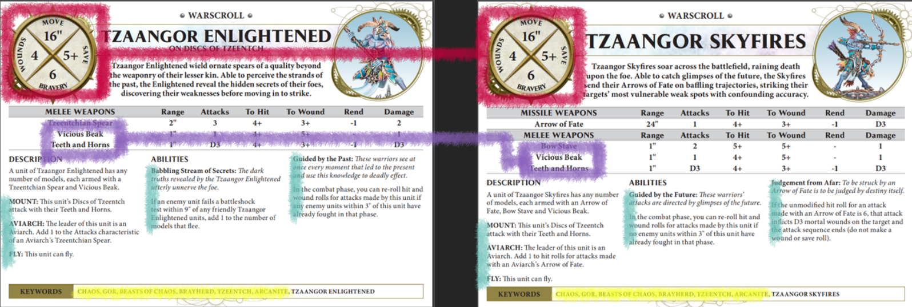
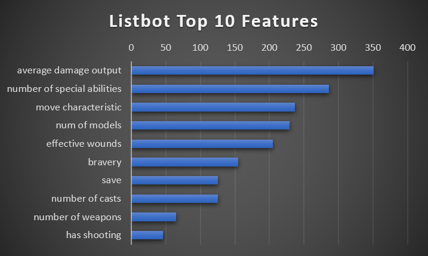

TL;DR - Listbot estimates the points cost of a warscroll by identifying key features of that warscroll, and comparing those features to the features of other warscrolls of which the points costs are already known.
Listbot breaks a warscroll down into a long list of features, such as basic stats, number of special abilities, number of keywords, the presence of certain specific keywords like Monster or Hero, and many more. It uses a machine learning technique called "Gradient Boosted Trees" in order to learn the way in which the features map to the points costs of units. E.g. models with a 3+ save are more expensive in general than models with a 4+ save, or a hero with the Wizard keyword is more expensive than a hero without it.
An example is that Listbot estimates that Tzaangor Skyfires should cost 180 points (90% of their in game points cost). It is comparing Skyfires to all of the other warscrolls it has ever seen, but we can illustrate some of its
thinking by looking at the scroll for Tzaangor Enlightened, which has many similar features to the Skyfires scroll. The same base stats (red), some of the same attack profiles (purple), the same amount of special rules (green),
and most of the same keywords (yellow).

When evaluating Sykfires, Listbot knows that Tzaangor Enlightened cost 170 points. It then sees that Skyfires are very similar, except they also have a shooting attack*, which it believes increase their value, and bumps their cost up to the 180 points we discussed above.
*This is a guess, we can't exactly tell what Listbot is thinking for its calculations, however in this case I think it's a reasonable assumption.
Overall, the 10 features that Listbot believes best indicate the points cost of a unit are shown below. I.E. these are the features that allow Listbot to most accurately predict the points cost of a warscroll. Note that Listbot
only uses the number of special abilities a unit has, as it cannot (yet!) understand what the rules actually do.

"num of models" refers to the number of models you get for the base points cost, e.g. 20 Clanrats, 1 Gaunt Summoner, or 3 Endrinriggers.
"effective wounds" refers to the combination of the number of wounds the model has, the save it has, and any after save it has. This is the average amount of damage (with no rend) that you would have to do to kill the unit. E.g. 10 wounds with no save would be 10 effective wounds, but with a 4+ save would be 20 effective wounds.
Hopefully this has been a somewhat helpful explanation of how Listbot estimates points values for units in Age of Sigmar. Follow me on Twitter @jpganis for more analysis and Listbot evaluations of all the factions in Age of Sigmar, and if you have any questions I'd love for you to shoot me a message or find me on whatsapp, I'm in lots of the faction chats. Much love, Jp.